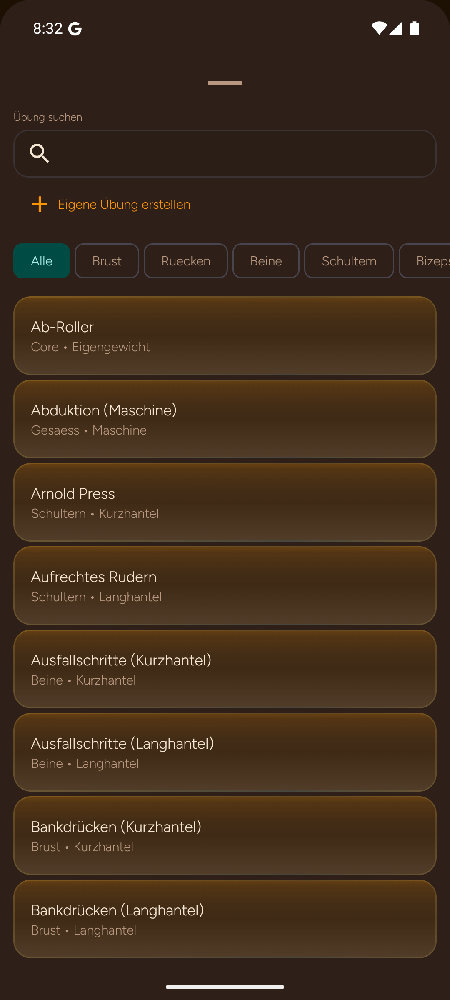

IRONLOG / UX-AUDIT · PLANERSTELLUNG
Den ganzen Plan in einer Auswahlrunde aufbauen
Suche und Filter bleiben erhalten, während drei Übungen gesammelt markiert und übernommen werden.
03 / 07
Vorher · Original
Android / Picker
Die Auswahl einer Übung schließt den Picker. Bankdrücken, Rudern und Kniebeuge brauchen drei Öffnungen.
Nachher · Entwurf
Mehrfachauswahl09:41▮▮▮ 86%
Bankdrücken
Rudern
Kniebeugen
Schulterdrücken
Eigene Übung anlegen
Der vorhandene Weg für eigene Übungen bleibt erreichbar.
01 / AUSWAHL
Der Zähler hält den Zustand
„3 gewählt“ bleibt beim Wechsel von Suche und Muskelgruppe sichtbar. Der CTA benennt das Ergebnis exakt.
02 / FILTER
Orientierung oben halten
Bestehende Muskelgruppenfilter werden als schnelle Chips geführt. Die Suche bleibt die primäre Eingabe.
03 / REIHENFOLGE
Übernehmen, dann ordnen
Die drei Übungen werden gesammelt hinzugefügt; Reihenfolge und Supersets können anschließend bearbeitet werden.
Abnahmeziel
Bankdrücken, Rudern und Kniebeugen in einer Runde übernehmen, ohne Auswahlverlust beim Suchwechsel.